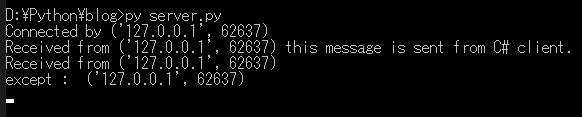
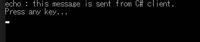
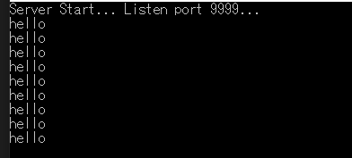
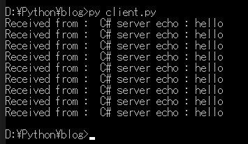

[Python] PythonとC#のソケット通信
こんにちは。明月です。
この投稿はPythonとC#のソケット通信に関する説明です。
開発の目的によってプログラムを使う方法の差がありますが、私の場合はメイン言語はJavaとC#でその以外に開発補助言語でPythonを使っています。
その意味は例えばC#のプロジェクトでCS(Client Server)プログラムを開発する時、普通はチームでClientかServerのことを担当して開発することになります。(プロジェクトのサイズによって両方を一緒で開発する時もあります。)
もし、私がClientを開発すると思えば、ServerとClientの通信のプロトコルを開発する部分があります。その部分はHttpConnectionを利用することもあるし、Soap通信することもあるし、一般ソケット通信することもあります。
その時、ServerとClientの通信部分を一緒で開発する方がよいですが、お互いにスケジュールの差異がある場合、ClientでServerのスケジュールを合わせて待つことしかできないです。
私の場合はスクリプト(Pythonやnode.js)で模擬サーバを作って開発します。(逆にServer側で模擬クライアントを作ります。)
個人的にJavascript(node.js)の言語もいいと思いますが、ローカルスクリプト言語としてnode.jsよりPythonがライブラリも多いし、早めに作成することができるのでよく使います。
その目的ではなくても、スクリプトで他の言語間に通信することもできます。
それならPythonサーバとC#のクライアント通信を説明します。
# ソケットを使うためにsocketモジュールをimportする。
import socket, threading
# binder関数はサーバーからacceptしたら生成されるsocketインスタンスを通ってclientからデータを受信するとecho形で再送信するメソッドだ。
def binder(client_socket, addr):
# コネクションになれば接続アドレスを出力する。
print('Connected by', addr)
try:
# 接続状況でクライアントからデータ受信を待つ。
# もし、接続が切れちゃうとexceptが発生する。
while True:
# socketのrecv関数は連結されたソケットからデータを受信を待つ関数だ。最初に4byteを待機する。
data = client_socket.recv(4)
# 最初4byteは転送するデータのサイズだ。そのサイズはlittleエンディアンでbyteからintタイプに変換する。
# C#のBitConverterはbigエンディアンで処理する。
length = int.from_bytes(data, "big")
# データを受信する。上の受け取ったサイズほど
data = client_socket.recv(length)
# 受信されたデータをstr形式でdecodeする。
msg = data.decode()
# 受信されたメッセージをコンソールに出力する。
print('Received from', addr, msg)
# 受信されたメッセージの前に「echo:」という文字を付ける。
msg = "echo : " + msg
# バイナリ(byte)タイプに変換する。
data = msg.encode()
# バイナリのデータサイズを計算する。
length = len(data)
# データサイズをlittleエンディアンタイプのbyteに変換して転送する。(※これがバグかbigを入れてもlittleエンディアンで転送する。)
client_socket.sendall(length.to_bytes(4, byteorder='big'))
# データをクライアントに転送する。
client_socket.sendall(data)
except:
# 接続が切れちゃうとexceptが発生する。
print("except : " , addr)
finally:
# 接続が切れたらsocketリソースを返却する。
client_socket.close()
# ソケットを生成する。
server_socket = socket.socket(socket.AF_INET, socket.SOCK_STREAM)
# ソケットレベルとデータタイプを設定する。
server_socket.setsockopt(socket.SOL_SOCKET, socket.SO_REUSEADDR, 1)
# サーバーは複数ipを使っているPCの場合はIPを設定して、そうではない場合はNoneや''で設定する。
# ポートはPC内で空いているポートを使う。cmdにnetstat -an | find "LISTEN"で確認できる。
server_socket.bind(('', 9999))
# server設定が完了すればlistenを開始する。
server_socket.listen()
try:
# サーバーは複数クライアントから接続するので無限ループを使う。
while True:
# clientから接続すればacceptが発生する。
# clientソケットとaddr(アドレス)をタプルで受け取る。
client_socket, addr = server_socket.accept()
# スレッドを利用してclient接続を作って、またaccept関数に行ってclientを待機する。
th = threading.Thread(target=binder, args = (client_socket,addr))
# スレッド開始
th.start()
except:
# コンソール出力
print("server")
finally:
# エラーが発生すればサーバーソケットを閉める。
server_socket.close()
上のソースは以前作成したPythonサーバーとそんなに差異がありません。
link - [Python] 18. ネットワーク(Socket)通信する方法
差異はlittleエンディアンを使うことではなく、bigエンディアンを使います。でも、to_bytesでbyteorderをbigに設定してもlittleエンディアンで転送します。
from_bytesの場合はbigに設定するとbigエンディアンになりますが。。
using System;
using System.Text;
using System.Net;
using System.Net.Sockets;
namespace SocketTest
{
class Program
{
// 実行関数
static void Main(string[] args)
{
// ソケット生成
using (Socket client = new Socket(AddressFamily.InterNetwork, SocketType.Stream, ProtocolType.Tcp))
{
// Connect関数でローカル(127.0.0.1)のポート番号9999で待機するソケットに接続する。
client.Connect(new IPEndPoint(IPAddress.Parse("127.0.0.1"), 9999));
// 送るメッセージをUTF8タイプのbyte配列で変換する。
var data = Encoding.UTF8.GetBytes("this message is sent from C# client.");
// 転送するデータの長さをbigエンディアンで変換してサーバで送る。(4byte)
client.Send(BitConverter.GetBytes(data.Length));
// データを転送する。
client.Send(data);
// データの長さを受信するための配列を生成する。(4byte)
data = new byte[4];
// データの長さを受信する。
client.Receive(data, data.Length, SocketFlags.None);
// serverでbigエンディアンを転送してもlittleエンディアンで受信される。bigエンディアンとlittleエンディアンは配列の順番が逆なのでreverseする。
Array.Reverse(data);
// データ長さでbyte配列を生成する。
data = new byte[BitConverter.ToInt32(data, 0)];
// データを受信する。
client.Receive(data, data.Length, SocketFlags.None);
// 受信したデータをUTF8エンコードでstringタイプに変換してコンソールに出力する。
Console.WriteLine(Encoding.UTF8.GetString(data));
}
// いずれかのキーを押下すると終了。
Console.WriteLine("Press any key...");
Console.ReadLine();
}
}
}
サーバを起動してクライアントを起動します。


上の例をみればClient(C#)で「this message is sent from C# client.」というメッセージを送信するとServerではコンソールで出力して「echo :」を付けてClientに転送しました。
Clientで「echo :」がつけたメッセージをPythonコンソールに出力されます。
今回は逆にC#がサーバでPythonがクライアントで接続することを作成します。
using System;
using System.Text;
using System.Net;
using System.Net.Sockets;
using System.Threading;
namespace SocketTest
{
class Program
{
// 実行関数
static void Main(string[] args)
{
// serverソケットを生成する。
using (var server = new Socket(AddressFamily.InterNetwork, SocketType.Stream, ProtocolType.Tcp))
{
// ipはローカルでポートは9999でlisten待機する。
server.Bind(new IPEndPoint(IPAddress.Any, 9999));
server.Listen(20);
// コンソールに出力
Console.WriteLine("Server Start... Listen port 9999...");
try
{
while (true)
{
// 多重接続を許すためにThreadpoolを利用してマルチスレッド環境を作る。
ThreadPool.QueueUserWorkItem(c =>
{
// クライアントソケット
Socket client = (Socket)c;
try
{
// 無限ループでメッセージを待機する。
while (true)
{
// 始めにデータ長さを受け取る4byteを宣言する。
var data = new byte[4];
// pythonでlittleエンディアンで値を受信する。bigエンディアンとlittleエンディアンは配列の順番が逆なのでreverseする。
client.Receive(data, 4, SocketFlags.None);
Array.Reverse(data);
// データの長さでbyte配列を生成する。
data = new byte[BitConverter.ToInt32(data, 0)];
// データを受信する。
client.Receive(data, data.Length, SocketFlags.None);
// byteをUTF8エンコードでstringタイプで変換する。
var msg = Encoding.UTF8.GetString(data);
// データをコンソールに出力する。
Console.WriteLine(msg);
// メッセージでechoを文字に付ける。
msg = "C# server echo : " + msg;
// データをUTF8エンコードでbyte形式で変換する。
data = Encoding.UTF8.GetBytes(msg);
// データの長さをクライアントで転送する。
client.Send(BitConverter.GetBytes(data.Length));
// データを転送する。
client.Send(data, data.Length, SocketFlags.None);
}
}
catch (Exception)
{
// Exceptionが発生すれば(予期しない接続終了)client socketを閉める。
client.Close();
}
// serverでclientが接続すればThreadPoolでThreadが生成されました。
}, server.Accept());
}
}
catch (Exception e)
{
Console.WriteLine(e);
}
}
// いずれかのキーを押下すると終了。
Console.WriteLine("Press any key...");
Console.ReadLine();
}
}
}
上のソースはPython serverと同じ機能です。下記はC#で作成したソースコードです。
# ソケットを使うためにsocketをimportする。
import socket
# 127.0.0.1のIPはローカルの意味だ。
HOST = '127.0.0.1'
# ポートはサーバーで設定した9999に接続する。
PORT = 9999
# ソケットを生成する。
client_socket = socket.socket(socket.AF_INET, socket.SOCK_STREAM)
# connect関数でサーバーに接続する。
client_socket.connect((HOST, PORT))
# 10回のループでsend、receiveをする。
for i in range(1,10):
# メッセージはhelloで送信
msg = 'hello'
# メッセージをバイナリ(byte)タイプに変換する。
data = msg.encode()
# メッセージのサイズを計算する。
length = len(data)
# データサイズをlittleエンディアンタイプに変換してサーバーに送信する。
client_socket.sendall(length.to_bytes(4, byteorder="big"))
# データを送信する。
client_socket.sendall(data)
# サーバーからデータサイズを受信する。
data = client_socket.recv(4)
# データ長さはbigエンディアンでintを変換する。(※これがバグかbigを入れてもlittleエンディアンで転送する。)
length = int.from_bytes(data, "big")
# データの長さを受信する。
data = client_socket.recv(length)
# データを受信する。
msg = data.decode()
# データをコンソールで出力する。
print('Received from : ', msg)
# ソケットリソースを返却する。
client_socket.close()


Clientでhelloというメッセージを10回に転送するループを作りました。Serverで10回のメッセージを受信して10回のechoメッセージをClientに送信しました。
ここまでPythonとC#のソケット通信に関する説明でした。
ご不明なところや間違いところがあればコメントしてください。
- [Python] Seleniumライブラリを使う方法(自動ウェブテスト、ウェブスクレイピング)2021/10/25 19:29:00
- [Python] メール(smtplib)を送信する方法2020/07/27 18:38:43
- [Python] HttpConnection(requestsモジュール)でウェブサーバーで接続する方法2020/07/20 14:41:51
- [Python] Excel(openpyxl)を扱う方法2020/07/16 16:40:31
- [Python] ファイル圧縮、解凍(zipfile)する方法2020/07/14 19:14:22
- [Python] Apache cgiでPythonを使う方法2020/07/09 19:58:19
- [Python] Web serverを起動する方法(http.server)2020/07/09 00:13:13
- [Python] WebSocketを使う方法2020/07/07 17:29:18
- [Python] PythonとJavaのソケット通信する方法2020/07/03 18:35:50
- [Python] PythonとC#のソケット通信2020/07/01 19:28:22
- [Python] INI(環境設定ファイル)を扱う方法2020/06/30 18:26:01
- [Python] Jsonを扱う方法2020/06/29 19:18:15
- [Python] XMLファイルを扱う方法2020/06/26 19:18:14
- [Python] IOを利用してCSVファイルを扱う方法2020/06/25 18:20:30
- [C#] 58. ウィンドウフォーム(Window form)を作成する方法、そしてウィンドウメッセージとキュー2021/10/27 20:35:44
- [Design pattern] 2-3. ブリッジパターン(Bridge pattern)2021/10/27 20:32:21
- [Design patten] 2-2. コンポジットパターン(Composite pattern)2021/10/27 20:30:54
- [Design pattern] 2-1. アダプターパターン(Adapter pattern)2021/10/26 19:12:40
- [Project design] プログラム最終テスト - ST(System test(Standard, Scenario))2021/10/26 19:10:07
- [Project design] プログラム結合テスト - IT(Integration test)2021/10/25 20:12:17
- [Python] Seleniumライブラリを使う方法(自動ウェブテスト、ウェブスクレイピング)2021/10/25 19:29:00
- [Design pattern] 1-5. プロトタイプパターン(Prototype pattern)2021/10/22 19:35:45
- [Project design] プログラム検証とテスト - Unitテスト2021/10/22 19:34:09
- [C#] 57. コーティング規約2021/10/21 18:57:02
- [C#] 56. 値の初期化及び基本データ値(default)を設定する方法、そして原始データのnull処理、?と??の使い方2021/10/21 18:54:41
- [C#] 55.namespaceとusing、そしてpartialの使い方2021/10/21 18:51:39
- [C#] 54. Reflection機能を使い方 - Attribute2021/10/20 19:29:31
- [Project design] プログラム制作(コーディング) - クラス作成方法2021/10/20 19:28:09
- [C#] 53. Reflection機能を使い方 - Propertyとevent2021/10/19 21:02:58